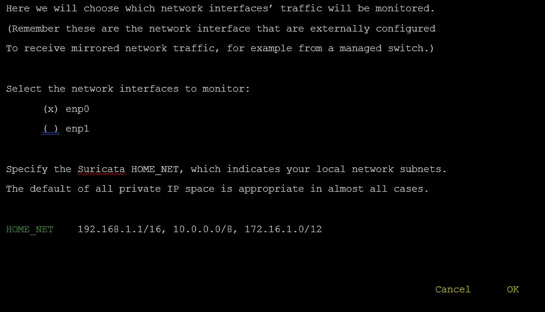

Deployment Overview
Perch Security Sensors provide visibility into the traffic that passes through a configured mirrored interface. You can increase visibility for a network segment when you configure Perch together with a WatchGuard firewall and a managed switch, as described in this integration guide.
Integration Summary
To test this integration, we used these devices:
- Perch Hardware Sensor
- WatchGuard FireboxV installed with Fireware v12.2
- Managed Switch capable of interface mirroring
Test Topology
Configure Your Firebox for Perch Sensor
On the WatchGuard Firebox, you must configure a policy to allow communication from the Perch Sensor to the Perch cloud app.
For more information on how to configure Firebox policies, see Policies.
- Log in to Fireware Web UI.
- Select Firewall > Firewall Policies.
- Select Add Policy.
The Select a policy type dialog appears.
- Select the Custom policy type, and click Add .
- Provide a policy Name. The Description is optional. Select the policy type: Packet Filter.
- Below Protocols select Add.
- From the Type drop-down list, select Single Port. Set the Protocol to TCP and the Server Port to 80.
- Select OK. Add a second Protocol for port 443. Select OK.
- Select Save on the bottom of the page.
The Select a policy type page appears.
- From the Custom policy drop-down list, select the name of the packet filter policy you configured above in Step 5. Select Add Policy.
- In the From settings, remove the Any-Trusted alias.
- In the From settings, select Add.
The Add Member dialog box appears. - From the Member Type drop-down list, select Host IPv4. Type the IP address of the Perch Sensor. Select OK.
- On the bottom of the Policy page, select Save.
Configure Your Managed Switch
You must set up a managed switch for port mirroring on the subnet intended for the Perch sensor. See the documentation for your managed switch for specific configuration information.
Get the Perch Cloud App Invitation
Use the Perch Cloud app to generate an invitation code that you add to the Perch Sensor to register it with Perch Cloud.
- To get the Perch Sensor invitation code, log in or register at https://app.perchsecurity.com.
-
Select the gear menu icon on the upper right. Select Device Invites.
- On the right side, below Filter Invites, select +.
The New Device Invite Code dialog box appears.
- Copy the case sensitive code.
Configure the Perch Sensor
You must configure the Perch Sensor to accept mirrored traffic from the switch and a management network. For physical sensors, you will need a keyboard and a direct monitor connection.
- Log in to the Perch command line with your username and password. The default username is perch and password is prairiefire.
- Use the tab key to choose the network interface and select No for DHCP.
- Type the IP address, netmask, and DNS server(s).
- Tab to select OK.
- In the proxy setup section, select No when asked about the use of an HTTP/HTTPS proxy for communication with the Perch cloud.
- Use the tab key to select OK.
- In the monitoring interface setup section, select the interface to receive the mirrored traffic.

- Use the tab key to select OK.
- Type the sensor information: Sensor name, Sensor location, Zip code, Country code and optional Geohash.

- Use the tab key to select OK.
- Configure the Perch Sensor with the invitation code you saved earlier.
- Use the tab key to select OK.
Wait while registration completes. It can take several minutes.
- When Perch Cloud registration completes, you will see a success message.
Test the Integration
When the Perch Sensor is operating and can communicate to the Perch Cloud app, your network traffic information will show on your Perch account.
- Log in to your Perch App at https://app.perchsecurity.com/login.
- Select Perchybana.
- The traffic list appears in a format that allows keyword search.
After your Perch Security device is set up, you have the option to join public or secret Communities and set up Alerts. You can use Communities to aggregate data with other users to understand the nature of your traffic. You can create Alerts when data triggers a rule. Each alert contains information about the payload that triggered the rule.